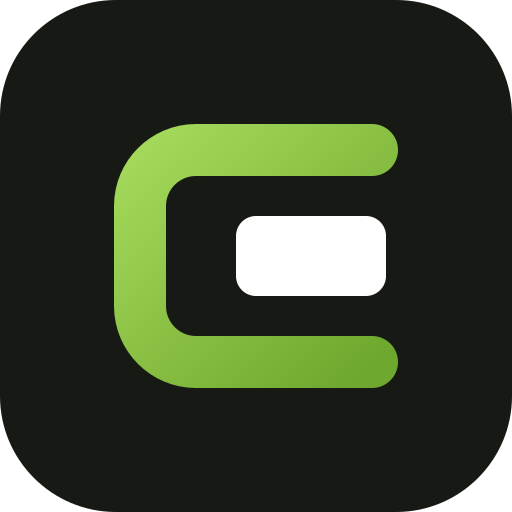

Three directions, each shown large and at the sizes Windows really uses (48, 32, 24 and 16 px: Start menu, taskbar, title bar, tray), on dark and light backgrounds. The current logo is last, for comparison.
Three windows, only the chosen one is lit. Says what the app does: the rest stays in the dark. Matches the dark UI.
A window inside viewfinder corners: "capture this window". Keeps the green tile of today, so it is the smallest change for people who know the icon.
A "C" (Capture, Codescovery) holding one window. Simplest shape, the most readable at 16 px in the tray.

Green monitor with a white mark. The mark turns into a blur below 32 px and does not say what the app does.